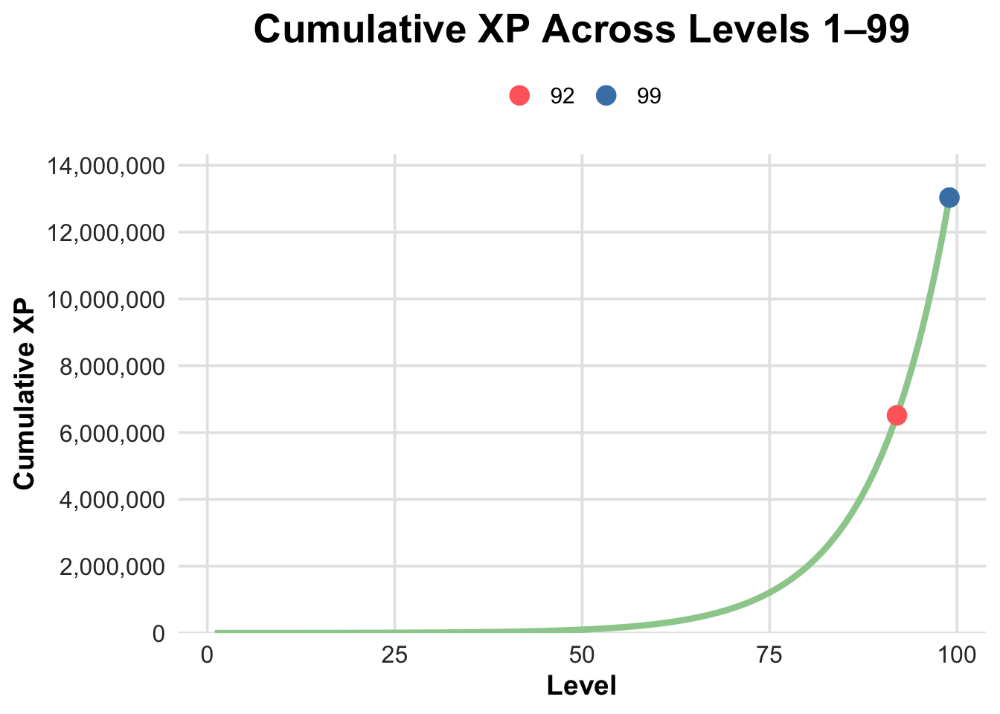
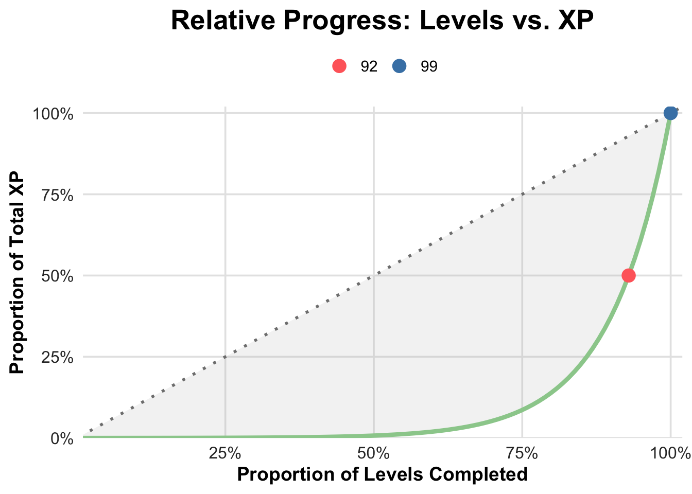
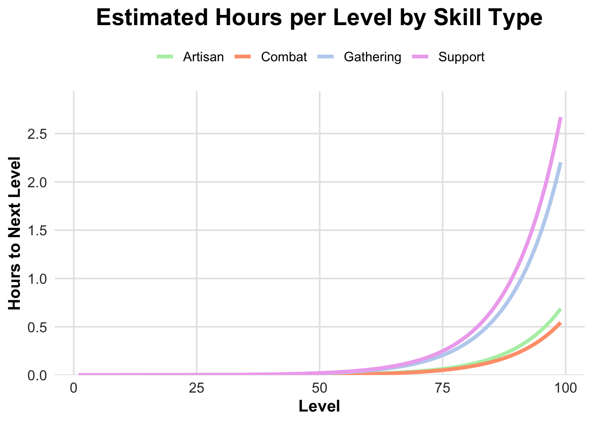
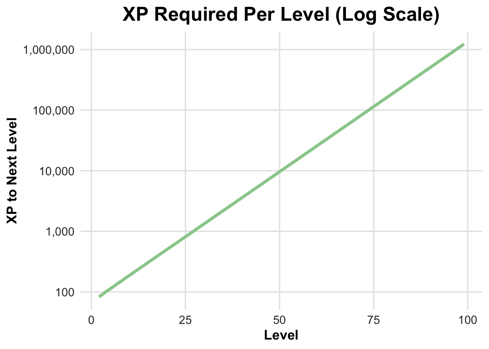
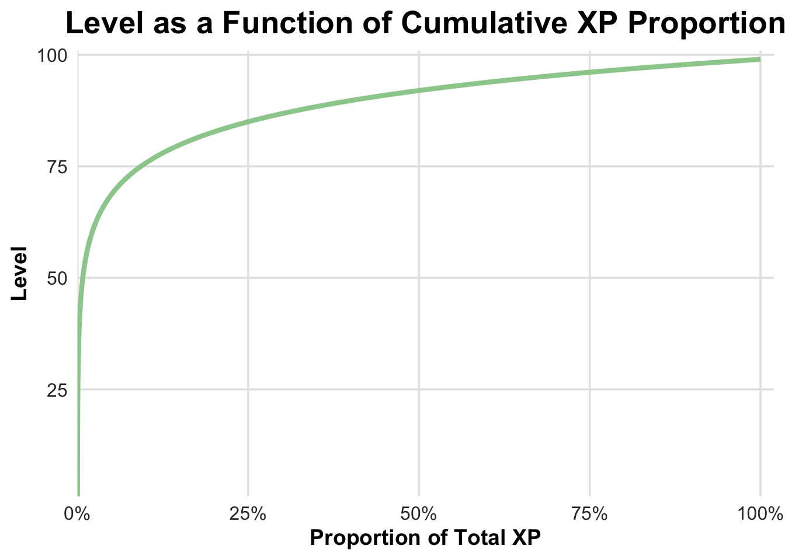

In the online game RuneScape, players often make a curious claim: “92 is half of 99.” At first glance, this seems impossible. Level 92 sits near the very end of the 1-to-99 sequence - clearly not the halfway point. Yet if we measure progress by cumulative experience points (XP), level 92 really is almost halfway to 99.
This mismatch between a level’s position and the total effort required is the central puzzle of this project. Levels increase one by one, but the XP needed grows exponentially. Our goal is to explore this structure mathematically and see how the story changes when we transform the scale.
# Load all required packages quietly
suppressMessages({
library(tidyverse)
library(rvest)
library(ggplot2)
library(dplyr)
library(scales)
library(tidyr)
})The XP table is publicly available on the RuneScape Wiki. Instead of entering values manually or relying on secondary sources (like a noob), we pull the data directly from the site. This approach keeps the analysis fully reproducible and ensures the numbers match the official progression used in the game.
# 1. Read the HTML from the RuneScape Wiki XP table page
url <- "https://runescape.wiki/w/Experience/Table"
# 2. Extract all tables from the page
page <- read_html(url)
tables <- page %>% html_table(fill = TRUE)
# 3. Select the first table, which contains levels 1-99
xp_raw <- tables[[1]]The page contains several tables, but the one we need lists, for each level, both the total cumulative XP and the XP required to reach the next level. We extract these columns and convert them into numeric values, ensuring the data is clean and ready for analysis.
# 4. Remove any empty spacer columns (wiki formatting artifacts)
xp_raw <- xp_raw[, names(xp_raw) != ""]
# 5. Make column names unique so tidyverse functions can operate safely
names(xp_raw) <- make.names(names(xp_raw), unique = TRUE)
# 6. Force all columns to character to avoid type conflicts during pivot
xp_raw <- xp_raw %>%
mutate(across(everything(), as.character))
# 7. Reshape from wide (side-by-side blocks) to long (single vertical progression)
# - Each block is 3 columns: Level, XP, Difference
# - Stack blocks vertically instead of using pivot_longer to preserve correct order
blocks <- seq(1, ncol(xp_raw), by = 3) # indices of first column in each block
xp_list <- lapply(blocks, function(i) {
tibble(
level = as.numeric(xp_raw[[i]]),
cumulative_xp = as.numeric(gsub("[^0-9]", "", xp_raw[[i+1]])),
xp_to_next = as.numeric(gsub("[^0-9]", "", xp_raw[[i+2]]))
)
})## Warning in eval_tidy(xs[[j]], mask): NAs introduced by coercionxp_table <- bind_rows(xp_list) %>%
# 8. Clean numeric formatting:
# - Already converted above, so this ensures proper numeric type
mutate(
level = as.numeric(level),
cumulative_xp = as.numeric(cumulative_xp),
xp_to_next = as.numeric(xp_to_next)
) %>%
# 9. Remove any NA rows (header artifacts)
filter(!is.na(level)) %>%
# 10. Sort by level for proper order
arrange(level)
# ---- Sanity Checks ----
range(xp_table$level) # Expect 1 99## [1] 1 99nrow(xp_table) # Expect 99## [1] 99# ---- Display ----
# Convert to a base data frame and format numbers for readability
as.data.frame(
xp_table[90:94, ] %>%
mutate(
cumulative_xp = format(cumulative_xp, big.mark = ","),
xp_to_next = format(xp_to_next, big.mark = ",")
)
)## level cumulative_xp xp_to_next
## 1 90 5,346,332 504,037
## 2 91 5,902,831 556,499
## 3 92 6,517,253 614,422
## 4 93 7,195,629 678,376
## 5 94 7,944,614 748,985# Create proportional columns for plotting
xp_percent <- xp_table %>%
mutate(
percent_levels = level / max(level),
percent_xp = cumulative_xp / max(cumulative_xp)
)At this point, our dataset is simple and complete. We have three key pieces of information: the level itself, the total cumulative XP required to reach that level, and the XP needed to advance to the next level. Because the data is clean, any patterns or surprises we uncover from here on out come from the shape of the progression itself — not from messy inputs.
We start with the most straightforward visualization: plotting cumulative XP against level. This shows each level in order along the horizontal axis while illustrating how much total effort accumulates as players progress.
# ---- Milestones with XP values ----
milestones <- xp_table %>%
filter(level %in% c(92, 99)) %>%
mutate(label = as.character(level),
color = c("indianred1", "steelblue"))
# ---- Display ----
xp_table %>%
filter(level <= 99) %>%
ggplot(aes(x = level, y = cumulative_xp)) +
# Main XP curve
geom_line(color = "darkseagreen3", size = 1.5) +
# Milestone points
geom_point(data = milestones,
aes(x = level, y = cumulative_xp, color = label),
size = 4) +
# Y-axis formatting
scale_y_continuous(labels = comma, breaks = scales::pretty_breaks(n = 6), expand = expansion(mult = c(0, 0.1))) +
# Colors for milestones
scale_color_manual(values = setNames(milestones$color, milestones$label)) +
# Titles
labs(
title = "Cumulative XP Across Levels 1–99",
x = "Level",
y = "Cumulative XP",
color = NULL # removes legend title
) +
# Theme
theme_minimal(base_size = 14) +
theme(
plot.title = element_text(hjust = 0.5, face = "bold", size = 20),
axis.title = element_text(face = "bold"),
axis.text = element_text(size = 12, color = "gray20"),
panel.grid.major = element_line(color = "gray90"),
panel.grid.minor = element_blank(),
legend.position = "top"
)## Warning: Using `size` aesthetic for lines was deprecated in ggplot2 3.4.0.
## ℹ Please use `linewidth` instead.
## This warning is displayed once every 8 hours.
## Call `lifecycle::last_lifecycle_warnings()` to see where this warning was
## generated.
The curve is immediately striking. Early levels require only a small fraction of the total XP, while the later levels account for most of the effort. Even though levels increase one by one along the horizontal axis, the cumulative XP rises much faster toward the end - a visual hint at why level 92 can be “halfway” to 99 in terms of XP.
To make the difference between level numbers and total effort clearer, we rescale both axes to show proportions of completion. This removes units and focuses attention on how far players have actually progressed.
# ---- Milestones with XP values ----
milestones <- xp_percent %>%
filter(level %in% c(92, 99)) %>%
mutate(label = as.character(level),
color = c("indianred1", "steelblue"))
# ---- Display ----
xp_percent %>%
filter(level <= 99) %>%
ggplot(aes(x = percent_levels, y = percent_xp)) +
# Shaded area between linear reference and actual XP curve
geom_ribbon(aes(ymin = percent_levels, ymax = percent_xp),
fill = "gray70", alpha = 0.15) +
# Main XP curve
geom_line(color = "darkseagreen3", size = 1.5) +
# Linear reference diagonal
geom_abline(slope = 1, intercept = 0, linetype = "dotted", color = "gray50", size = 1) +
# Milestone points
geom_point(data = milestones,
aes(x = percent_levels, y = percent_xp, color = label),
size = 4) +
# Colors for milestones
scale_color_manual(values = setNames(milestones$color, milestones$label)) +
# Axes formatting
scale_x_continuous(labels = scales::percent_format(accuracy = 1),
expand = expansion(mult = c(0,0.02))) +
scale_y_continuous(labels = scales::percent_format(accuracy = 1),
expand = expansion(mult = c(0,0.02))) +
# Titles
labs(
title = "Relative Progress: Levels vs. XP",
x = "Proportion of Levels Completed",
y = "Proportion of Total XP",
color = NULL
) +
# Theme
theme_minimal(base_size = 14) +
theme(
plot.title = element_text(hjust = 0.5, face = "bold", size = 20),
axis.title = element_text(face = "bold"),
axis.text = element_text(size = 12, color = "gray20"),
panel.grid.major = element_line(color = "gray90"),
panel.grid.minor = element_blank(),
legend.position = "top"
)
The dotted diagonal represents what progress would look like under a linear accumulation model: halfway through the levels would correspond to halfway through the XP. Instead, the observed curve hugs the lower boundary for most of the journey. Only near the final stretch does cumulative effort rapidly converge with ordinal completion.
The point corresponding to level 92 sits near 50% of total XP while occupying over 90% of the ordinal scale. The gap between the curve and the diagonal represents the structural divergence between two different notions of “progress.” Players experience this as “grind:” the early levels pass quickly, while late levels demand disproportionate time investment - so much so that “maxing” all skills in RuneScape can take anywhere from around 1,700 to 3,700 hours (or more)!
Cumulative curves can obscure the cost of individual transitions. To examine the local structure of the progression, we now plot the incremental XP required to move from one level to the next.
We then translate XP into estimated hours per level based on optimistic high-efficiency XP rates for each of the four main skill types in the game: Combat, Artisan, Gathering, and Support. These rates approximate near-optimal training conditions and therefore represent a lower bound on the time required; typical progression is often slower. These types bundle skills with similar progression characteristics, and the resulting lines show how grind accumulates differently depending on the kind of activity.
# 1. Skill XP/hour data
skill_xp_rates <- tibble(
skill = c("Agility", "Archaeology", "Melee", "Construction", "Cooking", "Crafting",
"Divination", "Dungeoneering", "Farming", "Firemaking", "Fishing", "Fletching",
"Herblore", "Hunter", "Magic", "Mining", "Necromancy", "Prayer", "Ranged",
"Runecrafting", "Slayer", "Smithing", "Summoning", "Thieving", "Woodcutting"),
xp_per_hour = c(100000, 800000, 800000, 850000, 450000, 600000,
550000, 600000, 1000000, 770000, 285000, 1500000,
8000000, 350000, 800000, 150000, 2000000, 3100000, 800000,
350000, 600000, 1800000, 4600000, 540000, 770000)
)
# 2. Map each skill to its type
skill_types <- tibble(
skill = c("Attack","Constitution","Defence","Magic","Necromancy","Prayer","Ranged","Strength","Summoning",
"Construction","Cooking","Crafting","Firemaking","Fletching","Herblore","Runecrafting","Smithing",
"Archaeology","Divination","Farming","Fishing","Hunter","Mining","Woodcutting",
"Agility","Dungeoneering","Slayer","Thieving"),
type = c(
rep("Combat", 9),
rep("Artisan", 8),
rep("Gathering", 7),
rep("Support", 4)
)
)
# 3. Keep only skills in the four types
skill_xp_rates <- skill_xp_rates %>%
inner_join(skill_types, by = "skill")
# 4. Average XP/hr per type
type_xp_rates <- skill_xp_rates %>%
group_by(type) %>%
summarise(xp_per_hour = mean(xp_per_hour, na.rm = TRUE)) %>%
ungroup()
# 5. Merge with xp_table to get hours per level
xp_type_hours <- xp_table %>%
filter(level <= 99) %>%
crossing(type_xp_rates) %>%
mutate(hours_to_next = xp_to_next / xp_per_hour)
# 6. Define distinct line colors for skill types
type_colors <- c(
"Combat" = "lightsalmon1",
"Artisan" = "darkseagreen2",
"Gathering" = "lightsteelblue2",
"Support" = "plum2"
)
# ---- Display ----
ggplot(xp_type_hours, aes(x = level, y = hours_to_next, color = type)) +
# Lines per skill type
geom_line(size = 1.5) +
# Line colors
scale_color_manual(values = type_colors) +
# Y-axis formatting
scale_y_continuous(labels = comma, breaks = pretty_breaks(n = 6),
expand = expansion(mult = c(0, 0.1))) +
# Titles
labs(
title = "Estimated Hours per Level by Skill Type",
x = "Level",
y = "Hours to Next Level",
color = NULL # removes legend title
) +
# Theme
theme_minimal(base_size = 14) +
theme(
plot.title = element_text(hjust = 0.5, face = "bold", size = 20),
plot.subtitle = element_text(hjust = 0.5, face = "italic", size = 14),
axis.title = element_text(face = "bold"),
axis.text = element_text(size = 12, color = "gray20"),
panel.grid.major = element_line(color = "gray90"),
panel.grid.minor = element_blank(),
legend.position = "top"
)
On a linear scale, the late-game requirements appear explosive. The incremental cost per level grows rapidly, giving the impression of acceleration. However, exponential functions often appear erratic when plotted linearly. To better understand the functional form, we apply a logarithmic transformation to the vertical axis.
# ---- XP per level (log scale) ----
xp_table %>%
# Exclude level 1 because xp_to_next = 0, which cannot be plotted on log10 scale
filter(level > 1 & level <= 99) %>%
ggplot(aes(x = level, y = xp_to_next)) +
# Main XP curve
geom_line(color = "darkseagreen3", size = 1.5) +
# Log scale (automatically skips NAs)
scale_y_log10(labels = comma) +
# Titles
labs(
title = "XP Required Per Level (Log Scale)",
x = "Level",
y = "XP to Next Level"
) +
# Theme
theme_minimal(base_size = 14) +
theme(
plot.title = element_text(hjust = 0.5, face = "bold", size = 20),
axis.title = element_text(face = "bold"),
axis.text = element_text(size = 12, color = "gray20"),
panel.grid.major = element_line(color = "gray90"),
panel.grid.minor = element_blank()
)
On a logarithmic scale, the curve straightens, revealing that what once looked like chaotic acceleration is actually steady exponential growth. The data itself hasn’t changed - only our perspective has. This illustrates a central theme of exploratory analysis: the apparent structure of a dataset often depends on the scale from which we view it.
Finally, we invert the conventional perspective by plotting level against cumulative XP proportion. This is a type of reparameterization, meaning we change the way the plot is scaled so that the horizontal axis no longer represents level but cumulative progress.
# ---- Level vs. cumulative XP proportion ----
ggplot(xp_percent, aes(x = percent_xp, y = level)) +
# Main line
geom_line(color = "darkseagreen3", size = 1.5) +
# Axis expansions for breathing room
scale_x_continuous(labels = scales::percent_format(accuracy = 1),
expand = expansion(mult = c(0, 0.02))) +
scale_y_continuous(expand = expansion(mult = c(0, 0.02))) +
# Titles
labs(
title = "Level as a Function of Cumulative XP Proportion",
x = "Proportion of Total XP",
y = "Level"
) +
# Theme
theme_minimal(base_size = 14) +
theme(
plot.title = element_text(hjust = 0.5, face = "bold", size = 20),
axis.title = element_text(face = "bold"),
axis.text = element_text(size = 12, color = "gray20"),
panel.grid.major = element_line(color = "gray90"),
panel.grid.minor = element_blank()
)
Under this reparameterization, the early levels appear squeezed together on the left, while the late levels spread out toward the right. What looked uniform on the original level axis now reveals the uneven pace of progress: most of the journey is quick, but the final levels demand much more. By plotting cumulative XP proportion on the horizontal axis, the curve’s true shape - and the real “distance” of the grind - becomes clear.
The RuneScape leveling system progresses in simple steps, but the experience required grows exponentially. This creates a persistent mismatch: numbers that look close together often represent vastly different amounts of effort.
By looking at the system in different ways - cumulatively, proportionally, logarithmically, over time, or with warped axes - the same structure reveals different patterns. Saying “level 92 is half of 99” isn’t a paradox; it’s just how exponential growth appears when we read it on a linear scale.